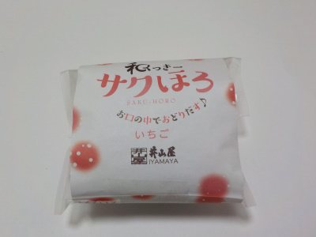
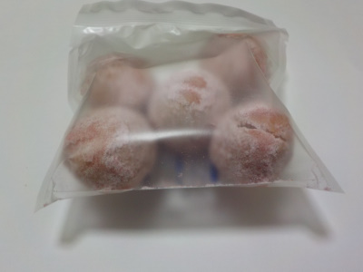

島根県出雲市江田町73-3
更新日 : 2022/01/16

和菓子屋さんのクッキーです。パッケージも和菓子屋さんっぽいかな。

まんまるクッキーにイチゴ味のパウダーがかかっていました。
中はクッキー、外はイチゴパウダー味でした。
【おいしいものを食べよう。】【たくさん寝よう。】
【ソロ活をしよう!】【季節感のあることをしよう。】【動画視聴はほどほどに。】【当サイトの全てのコンテンツは無断転載禁止です。】